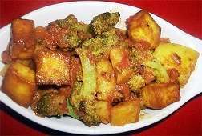

|  | Paneer Aloo Recipe is a wonderful and mouth melting curry method made with fry up potatoes and Indian bungalow cheese. It is a highest course dish which is usually seen in each wedding evening. |
Ingredients : Cottage cheese paneer cubes 2 cups, coarsely chopped 2 potatoes, cauliflower florets 1/2 cup, chopped thinly 1 onion, chopped 4 tomatoes, ginger-garlic paste 2 tablespoon, green chillies sliced 2-3 , curry leaves 3-4, cumin seeds jeera 1/2 teaspoon, kashmiri red chilli powder 1/2 teaspoon, turmeric powder 1/4 teaspoon , coriander powder 2 teaspoon, garam masala powder 1 teaspoon, ghee 1 tablespoon, Oil for deep fry, Salt as required, Fresh coriander leaves totally chopped. Method : Heat appropriate oil in a pan, deep fry the large pieces of potatoes. Take out on permeable paper and keep apart. Also deep-fry cauliflower florets and keep them apart. Now warmth the ghee in a different pan and put curry leaves and cumin seeds. Fry till seeds starts crunching put onion. Saute for few secs put paste ginger-garlic and green chillies. Again Fry for few secs. Now add puree of tomato, turmeric and red chilli powder, salt. Heat till oil start divorcing. Cook the flame about 2-3 mint. Put the pieces of paneer, fried potatoes and cauliflower florets. Also add garam masala powder and coriander, also add water to create a thick reliability of gravy, It should look average thick to serve. So add water consequently. Mix well and heat for 2 -3 mint on low flame. Garnish with garden-fresh coriander leaves and serve with roti or rice.
|
||||

Crispy Pizza
Crispy Pizza and Pressed Panini authentic recipe One of the very famous Street Italian food.
Golden Chicken
Crispy and curried Golden chicken recipe for cooking Golden Chicken ghastly.